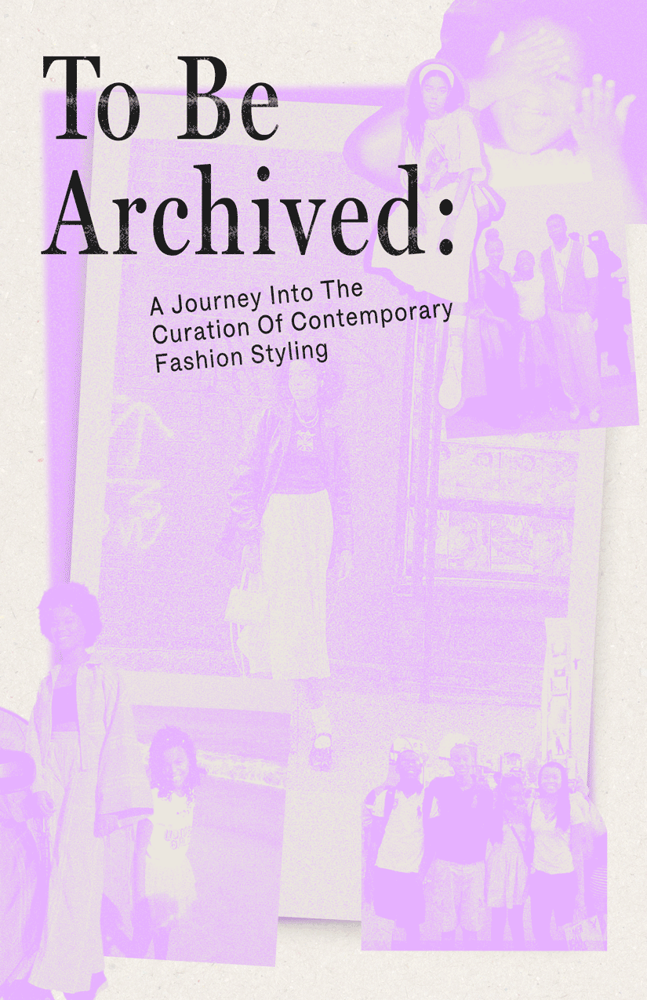
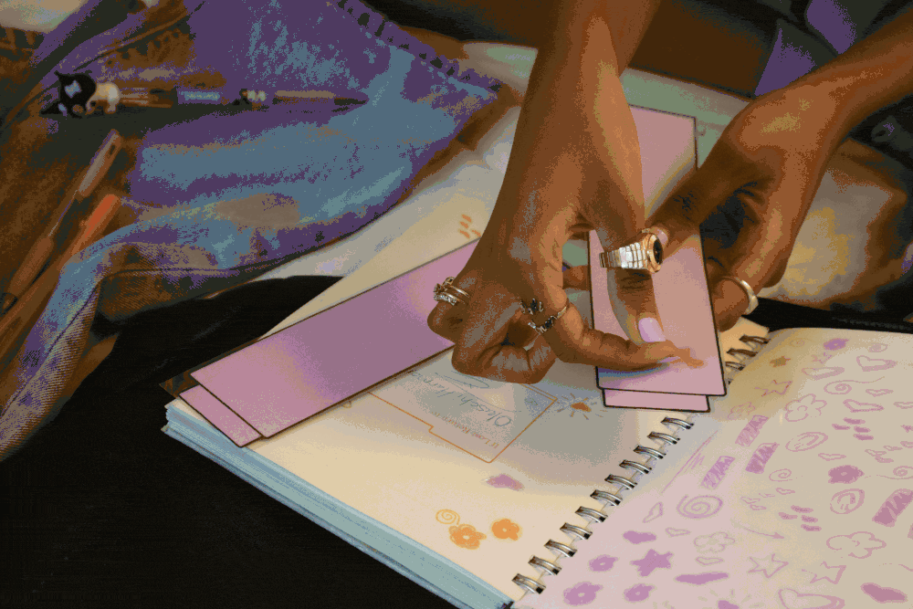
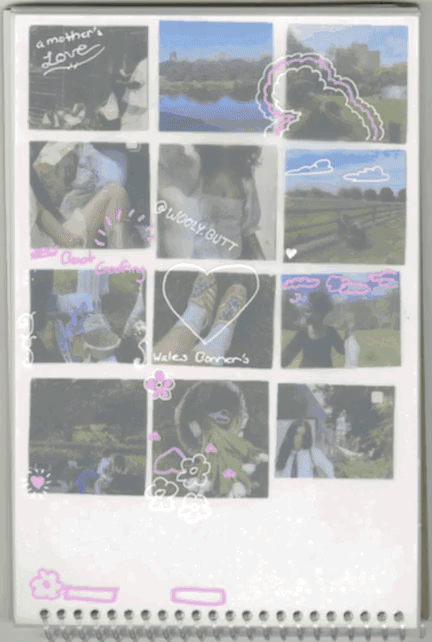
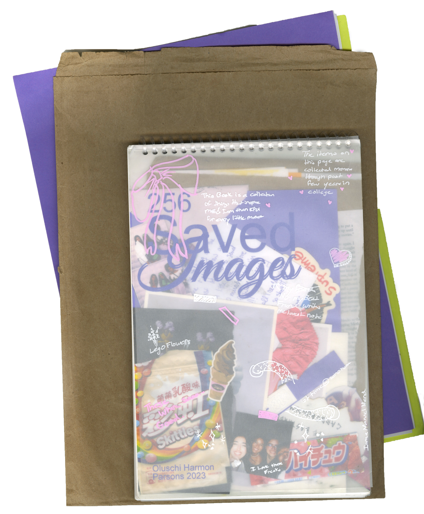
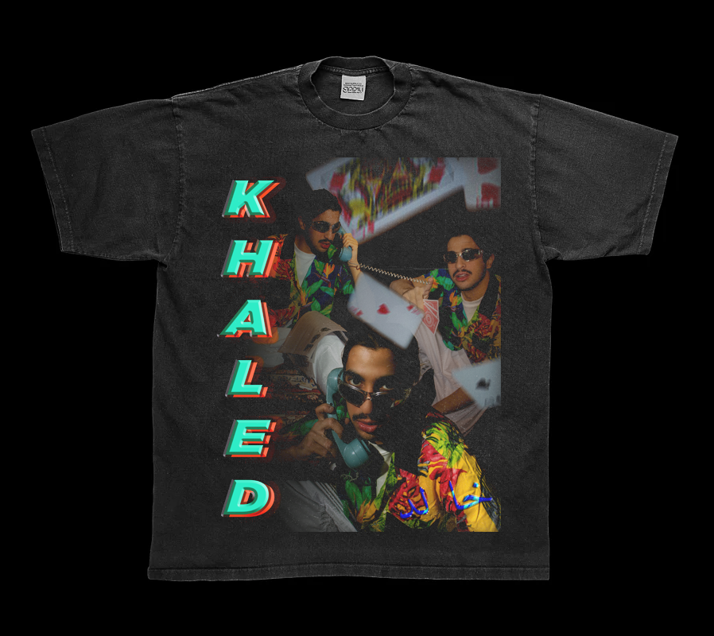
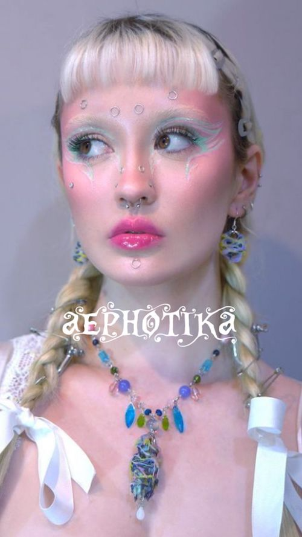
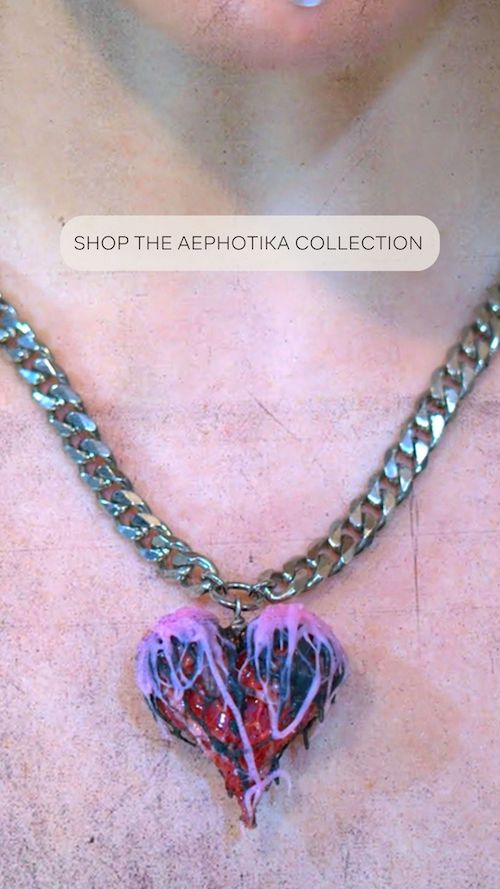
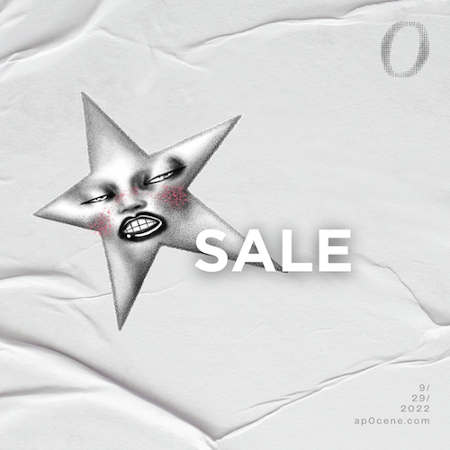
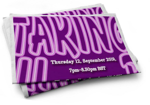

a creative & designer working where culture, design & social meet. I start from what's happening online — then turn it into ideas worth stopping for, art directed end to end.
a creative & designer working where culture, design & social meet. I start from what's happening online — then turn it into ideas worth stopping for, art directed end to end.

Sewing · Pattern Making
Doodling · Junk Journaling
Doom Scrolling


















